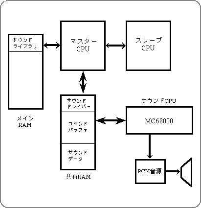

Return to previous page | Return to menu | Go to next page
This chapter explains the procedure and points to note when using the sound control library to output sound with Sega Saturn.
In SEGA Saturn, MC68000 is installed as a CPU for sound control, and it can operate independently of the master CPU.
The master CPU and sound CPU exchange functions through a RAM called command buffer. Since the function is issued by the sound control library, the user can control the sound without being aware of the interaction between CPUs.
There are PCM and CD as sound sources that can be used in Sega Saturn, but the sound driver controls the PCM sound source.
